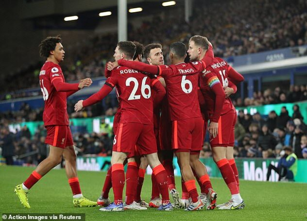

"ლივერპული" 4:1 "ევერტონი"

ინგლისის პრემიერლიგის მე-14 ტურში "ლივერპული" "ევერტონს" ესტუმრა და 4:1 დაამარცხა.
პირველ ტაიმში "წითლებმა" 2:1 იმარჯვეს, გოლები ჯორდან ჰენდერსონმა, მოჰამედ სალაჰმა გაიტანეს,
"კანფეტების" მხრიდან კი თავი დემარაი გრეიმ (38) გამოიჩინა.
მეორე ნახევარში იურგენ კლოპის
შეგირდებმა მასპინძელთა კარის ორჯერ აღება მოჰამედ სალაჰისა (64) და დიეგო ჟოტას (79) გოლების
წყალობით მოახერხეს.
ამრიგად, "ლივერპული" 31 ქულით მე-3 ადგილზე იმყოფება, მომდევნო
შეხვედრას კი 4 დეკემბერს, "ვულვზის" წინააღმდეგ ჩაატარებს.
გოლების ნახვა